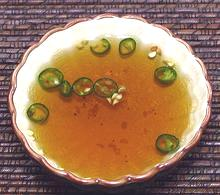

 |
Simple Dipping SauceVietnam, etc - Nuoc Mam Ot (Viet) | ||||
| Makes: Effort: Sched: DoAhead: |
4 oz * 5 min Yes |
This simple, every-day dipping sauce serves very well for many uses. While this sauce came from a Vietnamese cookbook, similar simple sauces are used in Thailand and Cambodia. | |||
|
1 3 4-1/2 |
T T |
Thai Chili (1) Fish Sauce (2) Water |
|